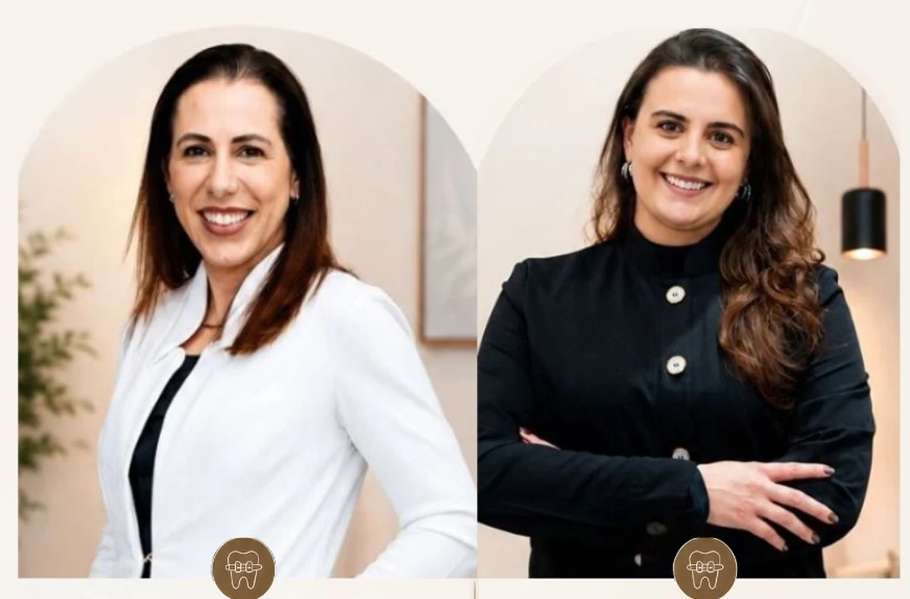
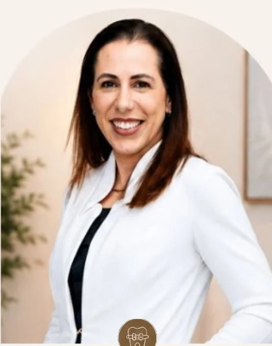
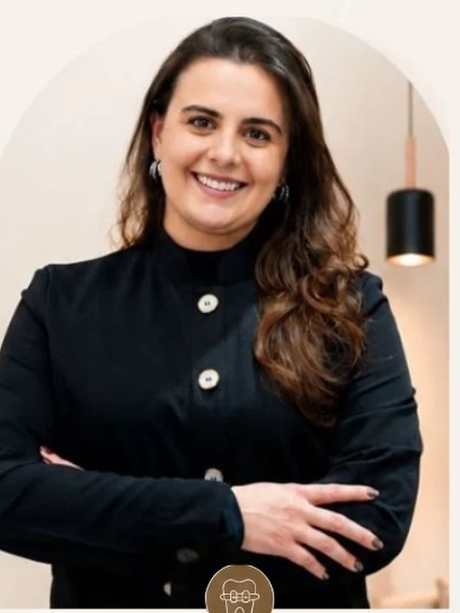
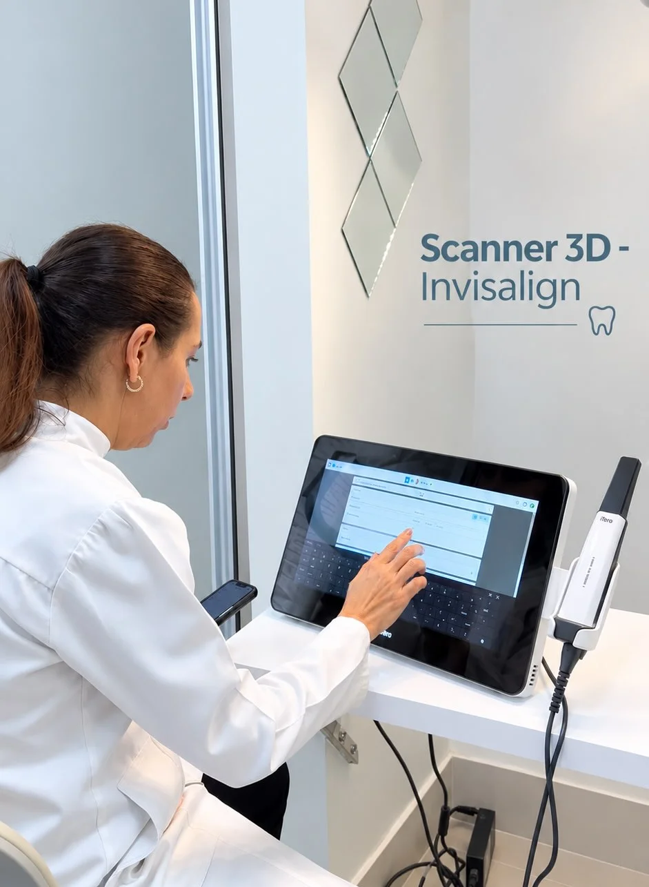

ORTODONTIA
Dra. Cynara Freitas
Atuação em tratamentos ortodônticos e ortopédicos, com foco no alinhamento dentário e no desenvolvimento esquelético, atendendo diferentes idades.
Solicitar informaçõesUma odontologia completa, integrada e humanizada para acompanhar você em cada fase da vida — com atenção, planejamento e respeito à sua história.


01 / NOSSA ESSÊNCIA
A Harmony acredita em uma odontologia que escuta, acolhe e explica. Aqui, cada pessoa tem seu tempo, sua história e suas necessidades — da primeira avaliação ao acompanhamento ao longo do tratamento.
Com diferentes áreas da odontologia reunidas no mesmo espaço, a proposta é oferecer uma experiência mais completa, com decisões individualizadas e conversas claras em cada etapa.
02 / CUIDADOS PARA VOCÊ
Prevenção, estética, reabilitação e ortodontia em um só lugar. Descubra os cuidados disponíveis e converse com a equipe sobre a melhor indicação para o seu caso.
Uma conversa sobre suas necessidades e os próximos passos do cuidado.
Saiba mais ↗ 02◌Prevenção e orientação para acompanhar sua saúde bucal.
Saiba mais ↗ 03✧Opções estéticas avaliadas de acordo com suas características clínicas.
Saiba mais ↗ 04⊕Planejamento de reabilitação para casos com indicação de implantes.
Saiba mais ↗ 05✳Possibilidades de reabilitação funcional e estética do sorriso.
Saiba mais ↗ 06⌁Alinhadores transparentes, quando indicados após avaliação ortodôntica.
Saiba mais ↗ 07◇Acompanhamento para alinhamento dentário e necessidades ortodônticas.
Saiba mais ↗ 08◎Investigação e cuidado em situações com indicação endodôntica.
Saiba mais ↗ 09✺Entre em contato para verificar a disponibilidade de avaliação odontológica.
Consultar atendimento ↗A indicação de procedimentos, a necessidade de exames e a disponibilidade de atendimento dependem de avaliação profissional.
03 / QUEM CUIDA DE VOCÊ
Conheça as profissionais apresentadas pela Harmony. Informações de registro e responsabilidade técnica devem ser confirmadas antes da publicação oficial.
Atuação em tratamentos ortodônticos e ortopédicos, com foco no alinhamento dentário e no desenvolvimento esquelético, atendendo diferentes idades.
Solicitar informações
Atuação em estética odontológica, restaurações e próteses, considerando a funcionalidade, a naturalidade e a harmonia de cada sorriso.
Solicitar informações04 / TECNOLOGIA E PLANEJAMENTO
O scanner intraoral 3D pode auxiliar na obtenção de registros digitais da boca, colaborando com o planejamento e o acompanhamento de determinados tratamentos odontológicos.

05 / SUA JORNADA
Fale com a equipe para consultar horários e contar o que procura.
O profissional escuta suas necessidades e avalia o caso individualmente.
Entenda as opções de cuidado, com indicações e orientações apropriadas.
06 / VAMOS CONVERSAR?
Preencha as informações ao lado e abra uma mensagem pronta para a equipe da Harmony no WhatsApp. Não é necessário compartilhar detalhes de saúde pelo formulário.
Edifício E-Business, Av. Pau Brasil, 06, sala 1710
Águas Claras · Brasília/DF
A equipe pode orientar sobre horários.
DÚVIDAS FREQUENTES
Use o botão de WhatsApp desta página para consultar a disponibilidade da equipe e solicitar um horário.
A apresentação institucional informa um cuidado odontológico integrado em diferentes fases da vida. Confirme com a equipe a disponibilidade do atendimento específico.
A indicação depende de uma avaliação ortodôntica. O profissional poderá explicar as alternativas adequadas à sua condição.
Entre em contato para verificar a possibilidade de avaliação e os horários disponíveis. A página não anuncia pronto atendimento 24 horas.
O perfil público informa o Edifício E-Business, Avenida Pau Brasil, nº 06, sala 1710, Águas Claras, Brasília/DF. Confirme a localização com a equipe antes de se deslocar.